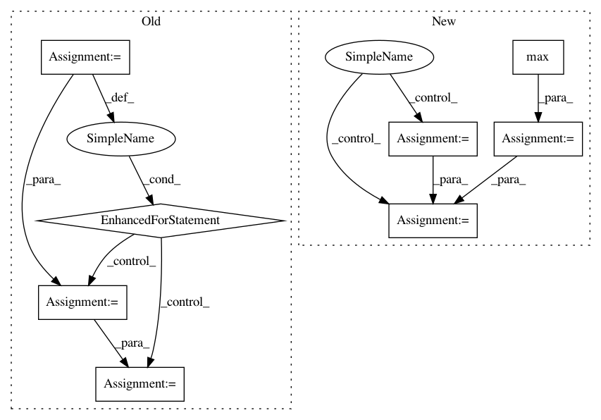

203ed6d1fda8de579c2bf311e5890dca05c14985,cnvlib/target.py,,shorten_labels,#Any#,185
Before Change
curr_gene_coords.append(next_coords)
else:
// End of the old gene -- emit coords + shared name(s)
for coords in curr_gene_coords:
out_row = emit(coords, curr_names)
yield out_row
longest_name_len = max(longest_name_len, len(out_row[-1]))
// Start of a new gene
curr_gene_coords = [next_coords]
curr_names = next_names
// Final emission
for coords in curr_gene_coords:
After Change
for _i in range(curr_gene_count):
out_name = shortest_name(curr_names)
yield out_name
longest_name_len = max(longest_name_len, len(out_name))
// Start of a new gene
curr_gene_count = 1
curr_names = next_names
// Final emission
for _i in range(curr_gene_count):
out_name = shortest_name(curr_names)
yield out_name
longest_name_len = max(longest_name_len, len(out_name))
logging.info("Longest name length: %d", longest_name_len)
In pattern: SUPERPATTERN
Frequency: 4
Non-data size: 8
Instances
Project Name: etal/cnvkit
Commit Name: 203ed6d1fda8de579c2bf311e5890dca05c14985
Time: 2016-12-10
Author: eric.talevich@gmail.com
File Name: cnvlib/target.py
Class Name:
Method Name: shorten_labels
Project Name: interactiveaudiolab/nussl
Commit Name: b82419f321b3b52841065e00d1f50945d7e8a2ee
Time: 2020-03-16
Author: prem@u.northwestern.edu
File Name: nussl/separation/primitive/hpss.py
Class Name: HPSS
Method Name: run
Project Name: chainer/chainercv
Commit Name: a7706fbde22887909db42f96a696437c084c05db
Time: 2017-05-31
Author: Hakuyume@users.noreply.github.com
File Name: chainercv/evaluations/eval_detection_voc.py
Class Name:
Method Name: eval_detection_voc
Project Name: rtavenar/tslearn
Commit Name: c68ec2e70731f601f630eb1816c51d7ee4ef0853
Time: 2018-08-10
Author: guillaume.androz@gmail.com
File Name: tslearn/preprocessing.py
Class Name: TimeSeriesScalerMinMax
Method Name: fit_transform